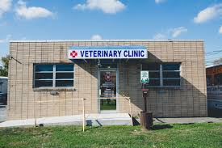
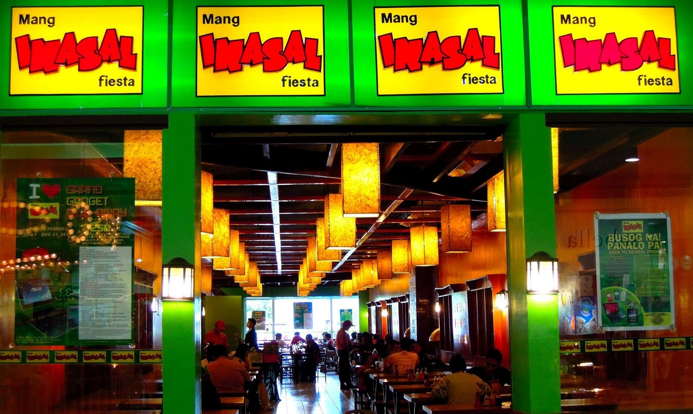

PROFILE
PROFILEWork Experience

Intership Program Cloyd’s Veterinary Clinic
- Responsible for 8hrs duty per day (5)days a week.
- Shall observe and assist and perform.
- Cleaned and maintained station in practicing good safety, sanitation and organizational skills.

Mang Inasal–Service Crew
- Responsible for the daily preparation of food items in the pantry, fry and/or stations or other areas of the kitchen.
- Prepared all food items as directed in a sanitary and timely manner.
- Set up stations according to restaurant guidelines.